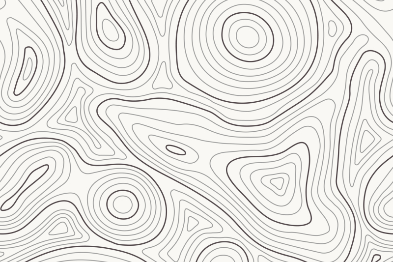

THE VORONOI MAP GOES HERE!
THE HEIGHT-LINE MAP GOES HERE!
USE THE BUTTON ON THE TOP RIGHT TO SWITCH THE MAP.
Imagine clicking on a station on the map
The voronoi map will draw an area around each station. This area will be colored according to the snow depth at the respective station. We will encode through colors whether there is a lot of snow. By using the controls at the top of the page, the user can control what data is displayed, i.e., they can choose a year and a month and the map will then be colored according to the respective measurements.

This height-line map is used as the starting point. The goal is that the user can pan it and see the exact location of each station as well as their elevation. Realizing a 3D map gives the user a better understanding of the elevation of the station. Using the switch button in the top right corner, one can switch to the more elaborate voronoi map.